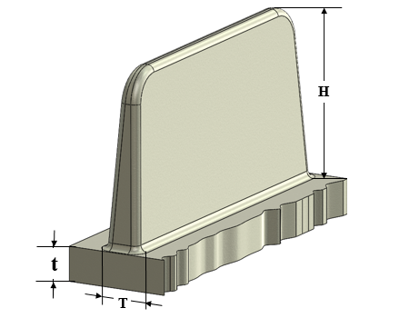

リブのパラメータは、製造の容易さと所望の品質を持つ部品を得るために、推奨事項に従う必要があります。
ダイカスト部品では、リブは長手方向に沿った突起として追加されます。リブは主に次の 2 つの目的で使用されます。
溶融金属の流動を該当部位へ改善するため。
最小肉厚を維持しながら、部品の剛性を高めるため。
リブは、部品の反りを最小限に抑える効果もあります。
リブが薄すぎると急速な冷却や早期凝固を引き起こし、注湯時のコールドシャットや鋳造部品における未充填欠陥につながります。一方で、リブが厚すぎると鋳物の重量が増加し、リブが鋳造壁と交差する部分で肉厚が増大してホットスポット収縮が発生します。リブが長すぎる場合は、リブを支持する構造が必要になることもあります。そのため、リブは鋳造性を確保しつつ、構造的な完全性を満たす適切な寸法で設計する必要があります。
一般に、推奨されるリブ高さは公称肉厚の 3 倍を超えないようにします。同様に、リブ基部の厚さは公称肉厚のおよそ 0.6 倍とすることが推奨されます。

H = リブ高さ
t = 公称肉厚
T = リブ厚さ